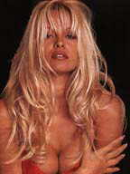
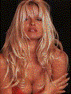
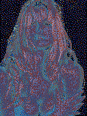

|
 |
JPEG
Сжатие 75%
16,7 миллионов цветов
6469 байт
Эта картинка принята за основу. Она дает понять, почему фотографии обычно делают в формате JPEG. Это самый маленький и самый качественный файл.
|
|
GIF
256 цветов
Адаптивная палитра
24248 байт
Наилучший результат получается с адаптивной палитрой из 256 цветов. Посмотрите на размер файла. Он почти в четыре раза больше JPEG.
|
|
GIF
256 цветов
Системная палитра
14127 байт
Системная палитра немного снижает качество изображения. Оно становится пятнистым, и пропадают тонкие линии.
|
|
GIF
216 цветов
Палитра Web
8764 байт
Палитра web состоит из цветов Windows и Macintosh. Результат примерно тот же, но в этом случае можно быть уверенным, что картинка правильно отобразится на обеих системах.
|
 |
GIF
16 цветов
Системная палитра
8711 байт
Это случается, если видео карта не может воспроизвести все необходимые цвета. Примерно то же получится, если показать 16- или 24-битный цветной рисунок на 256-цветном (8 бит) экране.
|
 |
GIF
256 цветов
Неправильная палитра
9445 байт
В некотором случае палитры могут конфликтовать. Такой результат может вызвать как системная палитра, так и две картинки с разными палитрами.
|